Every image below is a finished browser render. Click any frame for its full-resolution PNG. Dimensions describe the browser viewport; PNGs are exported at 2× resolution. The local preview demonstrates selected interactions and uses no live inventory or checkout.
Made for shorter laptop windows.
The first row’s size actions remain on screen in both views at 1280 × 580.
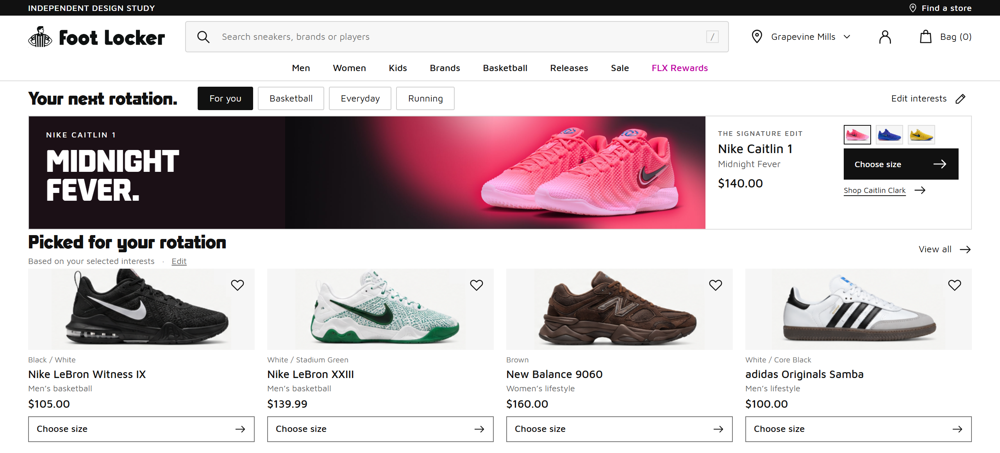
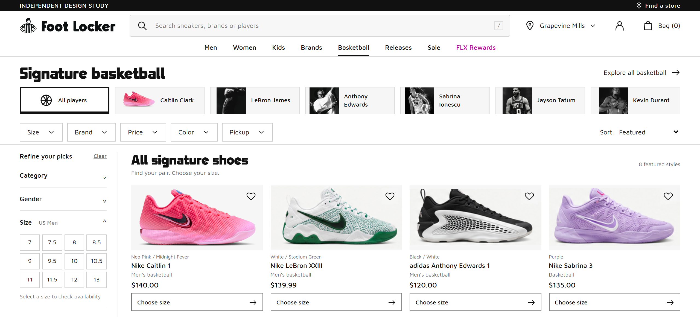
A direct mobile journey.
A two-column assortment, player-led discovery, and a size sheet that keeps the current page in context.


More room. The same hierarchy.
The brand's minimal product grid and editorial photography remain central.

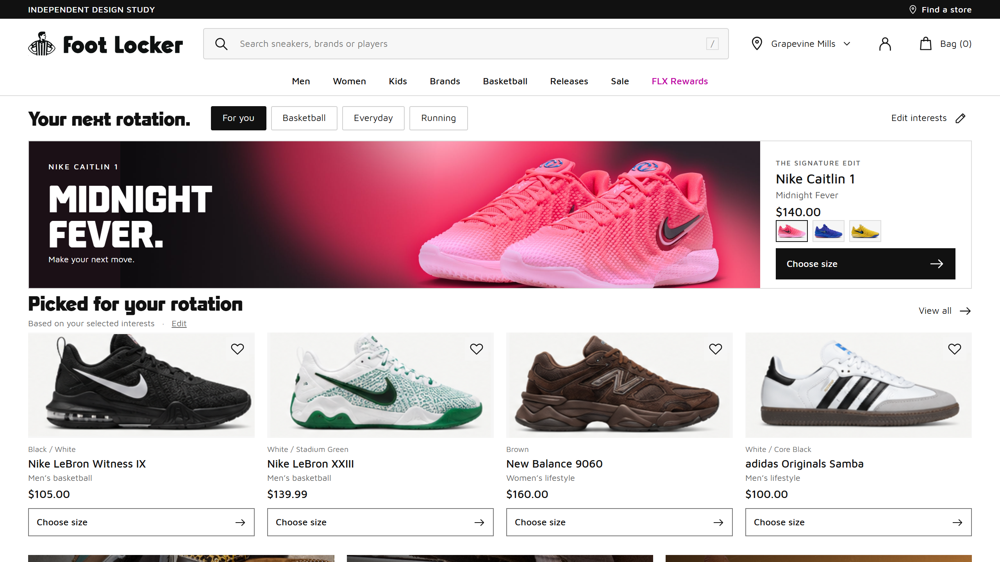

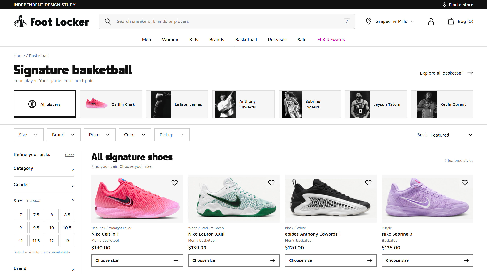

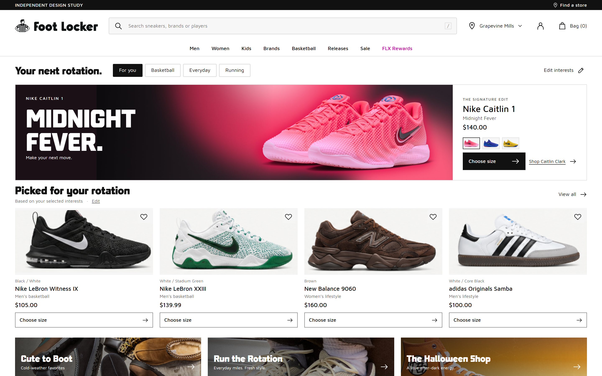

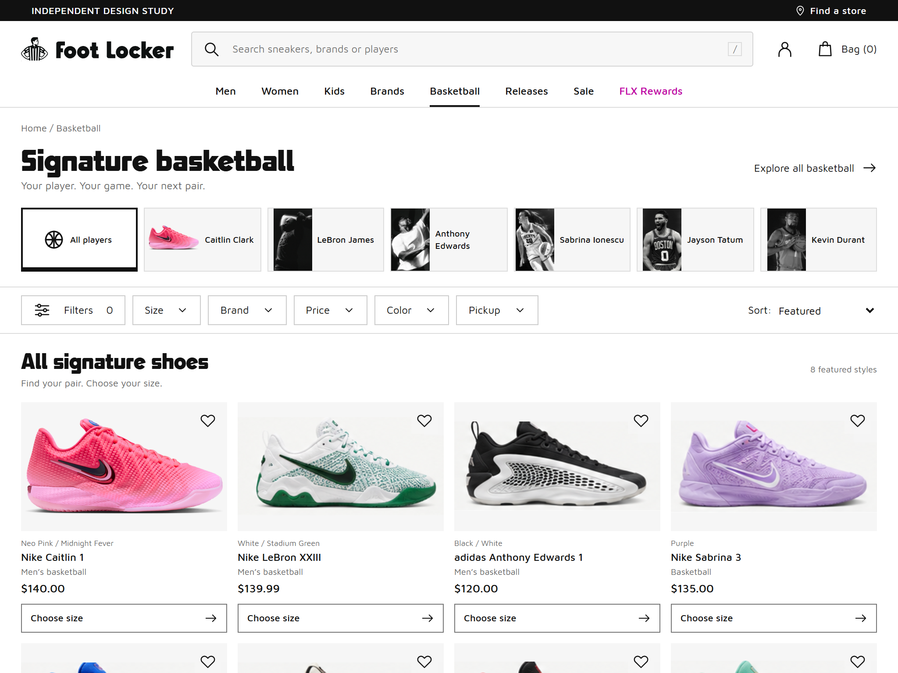
Small mobile, still shoppable.
Tested at 360 × 740 with the first recommendation/listing row’s actions within the viewport.

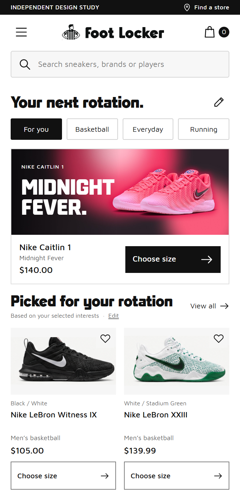

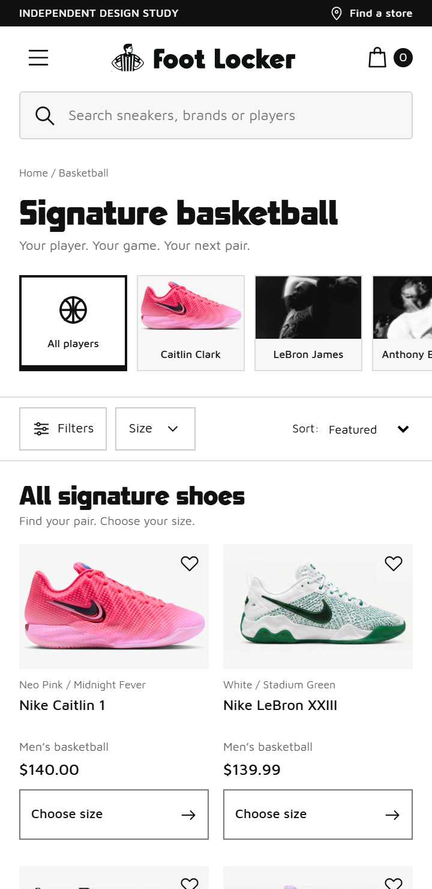

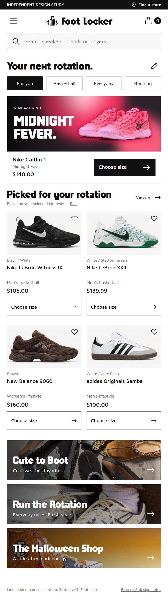
The complete pages.
Editorial collections follow the shopping assortment.

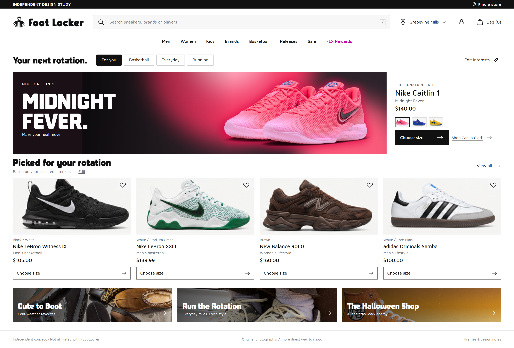

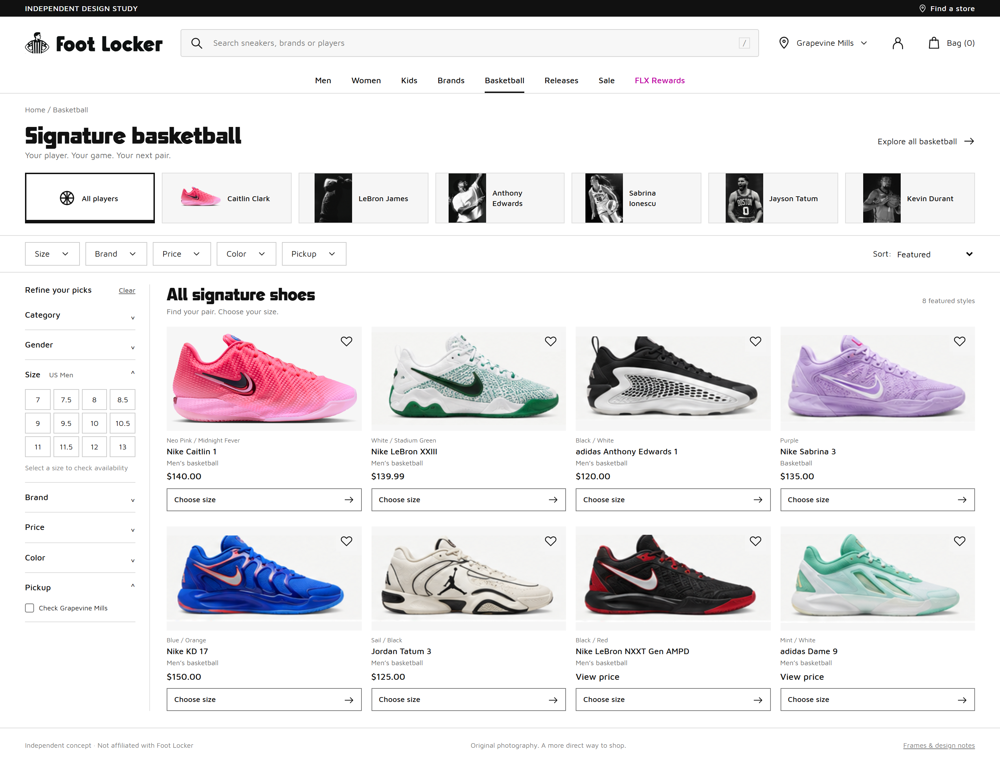